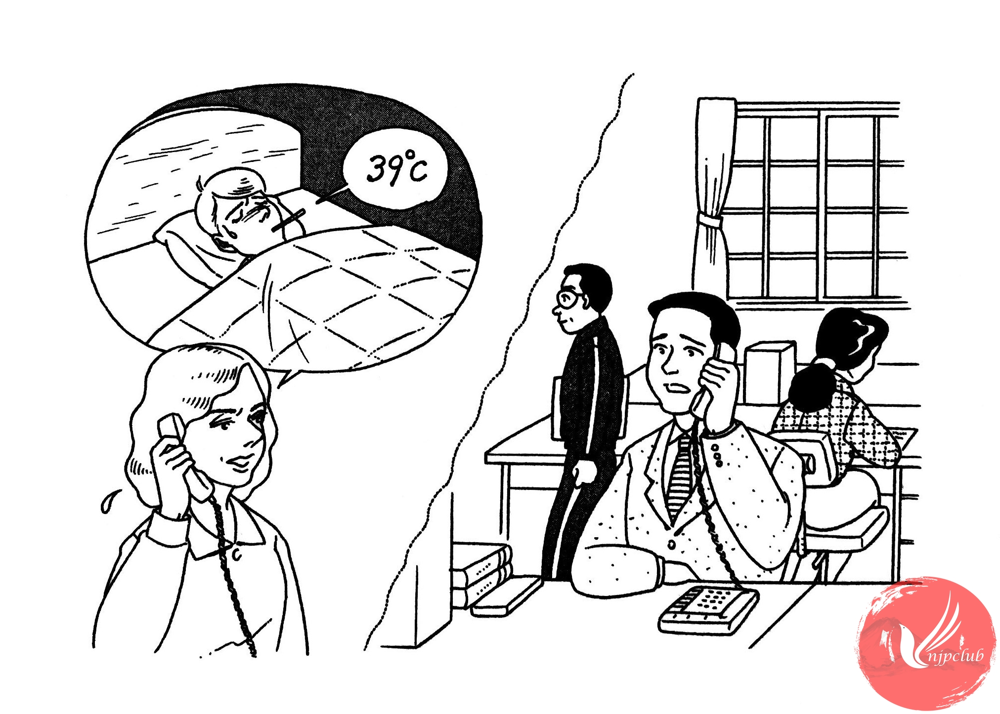

| 先生： |
はい、ひまわり小学校です。 |
| クララ： |
おはよう ございます。 |
|
５年2組の ハンス・シュミットの 母ですが、伊藤先生は いらっしゃいますか。 |
|
| 先生： |
まだなんですが･････。 |
| クララ： |
では、伊藤先生に 伝えて いただきたいんですが･････。 |
| 先生： |
はい、何でしょうか。 |
| クララ： |
実は ハンスが ゆうべ 熱を 出しまして、けさも まだ 下がらないんです。 |
| 先生： |
それは いけませんね。 |
| クララ： |
それで きょうは 学校を 休ませますので、先生に よろしく お伝え ください。 |
| 先生： |
わかりました。どうぞ お大事に。 |
| クララ： |
ありがとう ございます。失礼いたします。 |